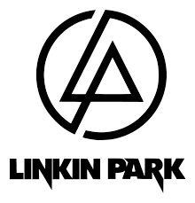
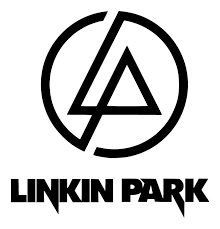

Linkin Park es una banda estadounidense de rock alternativo procedente de Agoura Hills, California
A formada en 1996. Integrada por Mike Shinoda, Dave Farrell, Joe Hahn, Brad Delson, Rob Bourdon y
Chester Bennington, este último como voz principal.
 
